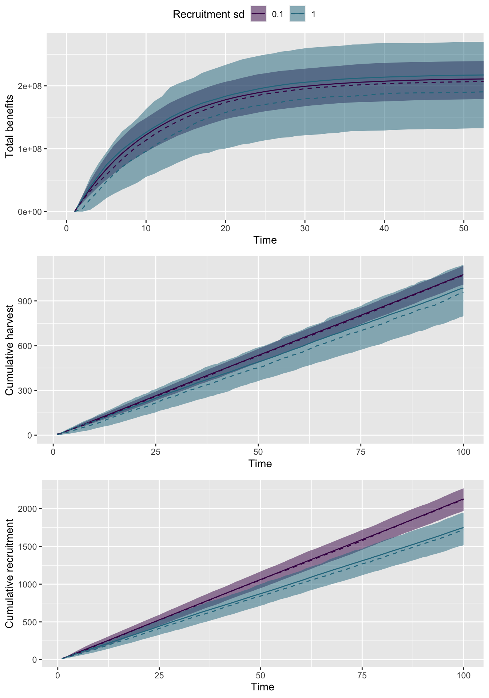
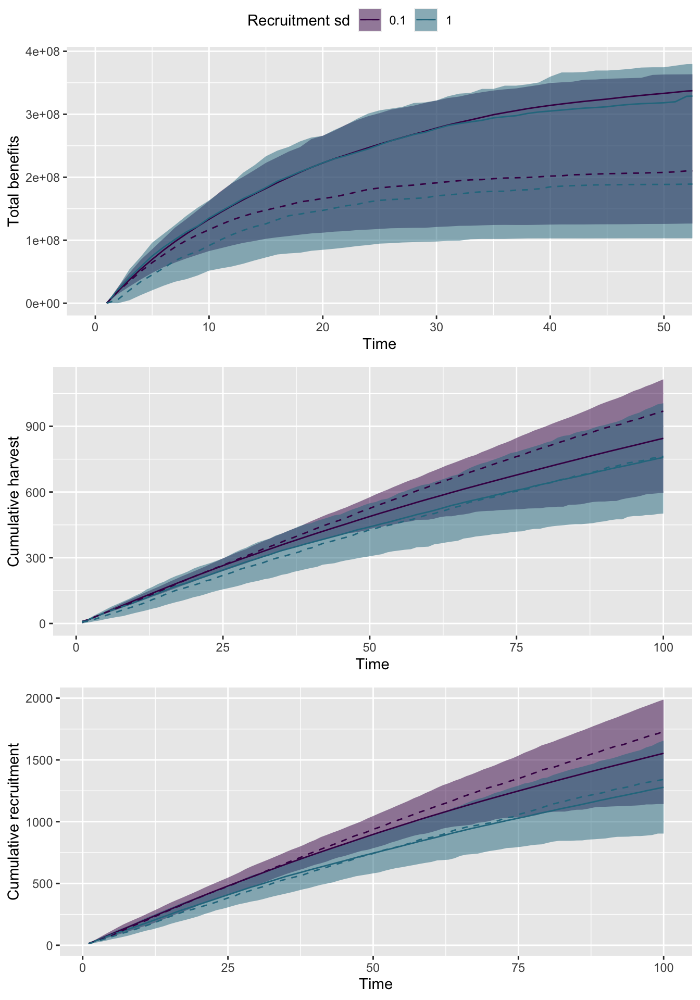
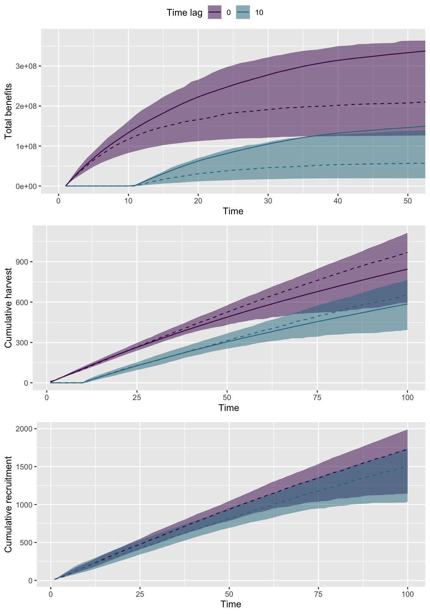
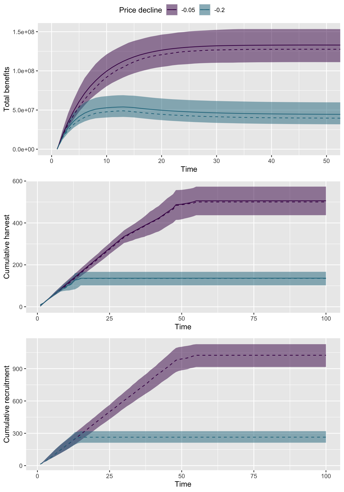
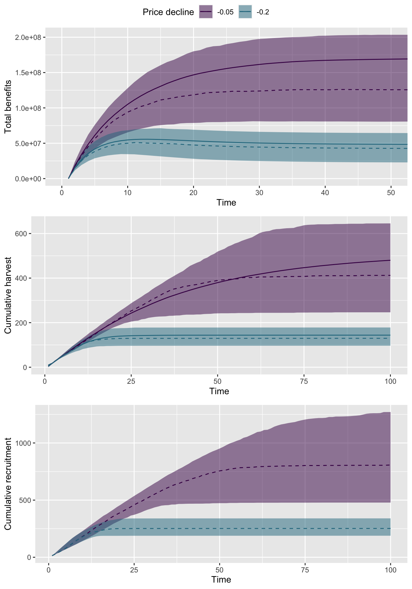

Summary of model output
There are a large number of axes to potentially explore with our simualations; below we’ll focus on * recruitment variability * management time lag * price declines For each of these metrics, we can also impose a feedback loop with prices and let the optimal escapement goal be dynamic
Recruitment variability
These plots demonstrate that net benefits are more variable with more variable recruitment; average net benefits (solid line) are also higher, however higher recruitment translates into lower median net benefits. The lower recruitment variability scenario also translates into higher cumulative recruitment and harvest.

We can also relax the assumption about constant prices, and let prices be dynamic (correlated random walks) and impose a feedback onto optimal escapement rules (making the optimal escapement also time varying).

{# {r sim2, cache=TRUE, echo=FALSE, warning=FALSE, message=FALSE} # # # loop over different values of recruitment # harvest_sd = c(0, 0.2) # dfs = list() # for(i in 1:length(harvest_sd)) { # # dfs[[i]] = sim( # sims = 1000, # time_steps = 100, # pr_12 = 0.1, # pr_21 = 0.1, # run = "odd", # deterministic_model = TRUE, # rec_std = 0.1, # rec_acf = 0, # harvest_CV = harvest_sd[i], # escapement_rule = "both", # discount_rate = 0.1, # seed = 123 # ) # dfs[[i]]$scenario <- paste(harvest_sd[i]) # } # # # collapse list of dataframes to single data frame # df <- bind_rows(dfs) # # # calculate discounted net benefit # df$discount_nb <- df$net_benefits*df$discount # # # calculate the sum for each simulation / scenario # summary = dplyr::group_by(df, sim, scenario) %>% # dplyr::mutate(cum_ben = cumsum(discount_nb), # cum_harv = cumsum(harvest), # cum_rec = cumsum(rec)) %>% # dplyr::group_by(t, scenario) %>% # dplyr::summarise(lo25_ben = quantile(cum_ben, 0.25), # hi75_ben = quantile(cum_ben, 0.75), # m_ben = mean(cum_ben), # med_ben = median(cum_ben), # lo25_h = quantile(cum_harv, 0.25), # hi75_h = quantile(cum_harv, 0.75), # m_h = mean(cum_harv), # med_h = median(cum_harv), # lo25_rec = quantile(cum_rec, 0.25), # hi75_rec = quantile(cum_rec, 0.75), # m_rec = mean(cum_rec), # med_rec = median(cum_rec) # )
{# {r echo=FALSE, warning=FALSE, message=FALSE, fig.height = 10} # g1 <- ggplot(summary, aes(t, m_ben, col = scenario, fill = scenario)) + # geom_ribbon(aes(ymin=lo25_ben, ymax=hi75_ben), alpha=0.5, col=NA) + # geom_line(aes(t,m_ben)) + # geom_line(aes(t,med_ben), linetype="dashed") + # ylab("Total benefits") + # xlab("Time") + # scale_color_viridis_d(end=0.4) + # scale_fill_viridis_d(end=0.4) + # guides(fill=guide_legend(title="Harvest sd"), # col=guide_legend(title="Harvest sd")) + # coord_cartesian(xlim=c(0,50)) # # g2 <- ggplot(summary, aes(t, m_h, col = scenario, fill = scenario)) + # geom_ribbon(aes(ymin=lo25_h, ymax=hi75_h), alpha=0.5, col=NA) + # geom_line(aes(t,m_h)) + # geom_line(aes(t,med_h), linetype="dashed") + # ylab("Cumulative harvest") + # xlab("Time") + # scale_color_viridis_d(end=0.4) + # scale_fill_viridis_d(end=0.4) + # guides(fill=guide_legend(title="Harvest sd"), # col=guide_legend(title="Harvest sd")) # # # g3 <- ggplot(summary, aes(t, m_rec, col = scenario, fill = scenario)) + # geom_ribbon(aes(ymin=lo25_rec, ymax=hi75_rec), alpha=0.5, col=NA) + # #geom_line(aes(t,m_rec)) + # geom_line(aes(t,med_rec), linetype="dashed") + # ylab("Cumulative recruitment") + # xlab("Time") + # scale_color_viridis_d(end=0.4) + # scale_fill_viridis_d(end=0.4) + # guides(fill=guide_legend(title="Harvest sd"), # col=guide_legend(title="Harvest sd")) # # ggarrange(g1, g2, g3, ncol=1, common.legend = TRUE, legend="top")
Management response
These plots demonstrate that a quick management response has a huge impact on total net benefits. The faster response scenario (time lag = 0) also translates into higher cumulative recruitment and harvest.

Again we can illustrate the effect with dynamic prices

Price Declines
These plots demonstrate that a quick management response has a huge impact on total net benefits. The faster response scenario (time lag = 0) also translates into higher cumulative recruitment and harvest.

The above price declines are assumed to be linear (non-stochastic) but we can introduce dynamic prices as we had before.
The above price declines are built in as determinsitic trends. We can also include the dynamic price variability, as above using a CV = 0.1.
